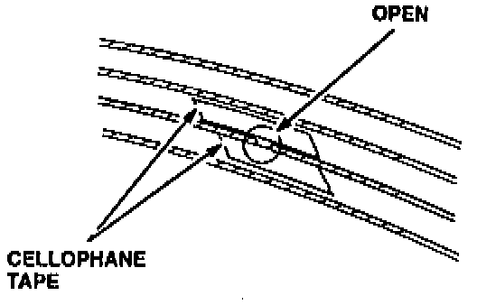
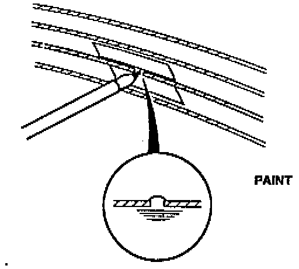

Window Antenna Repair
NOTE:To allow for an effective repair, the broken section must be no longer than one inch.
1. Lightly rub the area around the the broken grid line with fine steel wool; then clean it with isopropyl alcohol.

2. Carefully mask above and below the broken grid line of the window antenna with cellophane tape.

3. Use a commercially available rear window defogger repair kit (Loctite # 15067 or equivalent) to repair the broken section of the grid line. Apply the conductive resin paint following the manufacturer's instructions.
4. When the conductive resin paint is dry, recheck for continuity in the repaired section of the window antenna grid line.
^ If there is continuity, remove the cellophane tape from the repaired section.
^ If there is no continuity, recheck the grid line for other breaks, and repair the window antenna as needed.